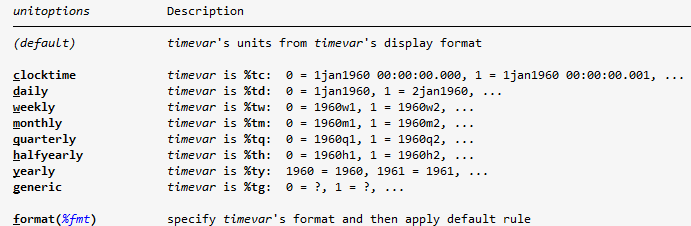

Series de tiempo - I
Descargar do-file con solución
Datos del Banco Central
En este laboratorio vamos a trabajar con una base de datos del Banco Central de Costa Rica.
Para descargar la base:
- Ingrese a la página del Banco Central de Costa Rica
- Seleccione el menú de Indicadores Económicos
- Seleccione Producción y empleo
- Busque la base Producto interno bruto por actividad económica, volumen a precios del año anterior encadenado
- Exporte la base a Excel
Formato de la base
Antes de importar la base en Stata es necesario hacer algunos cambios de formato.
En particular, copie los datos del PIB y péguelos transpuestos en una nueva hoja de Excel. De esta forma, cada fila representa un año y cada columna representa una variable.
Una vez que la base esté lista, podemos importarla en Stata.
Nombres de variables
Al importar datos desde Excel, Stata puede modificar nombres de variables que tienen tildes, espacios o caracteres especiales.
Use describe para revisar cómo quedaron llamados los campos antes de continuar.
En este ejemplo vamos a trabajar con el Producto Interno Bruto. Para que el código sea más sencillo, podemos renombrar la variable y expresar los valores en millones.
rename ProductoInternoBrutoapr PIB
label var PIB "Producto Interno Bruto"
replace PIB = PIB/1000000
¿Qué es una serie de tiempo?
Una serie de tiempo es un conjunto de datos registrados a lo largo del tiempo, generalmente en intervalos regulares como días, meses, trimestres o años.
Muchos datos económicos son registrados como series de tiempo. Por ejemplo:
- Producto Interno Bruto
- Inflación
- Tipo de cambio
- Desempleo
- Tasas de interés
Series de tiempo
En economía, las series de tiempo son útiles porque permiten analizar cómo cambia una variable, identificar patrones y comparar periodos.
Más adelante en la carrera verán técnicas más avanzadas para proyectar y modelar este tipo de datos.
Conceptos útiles
Antes de trabajar con los comandos, conviene tener claros algunos conceptos:
Tendencia
La tendencia es el comportamiento de la serie en el largo plazo.
Ciclo
El ciclo es el movimiento de la serie alrededor de su tendencia durante un cierto periodo de tiempo.
Estacionalidad
La estacionalidad corresponde a patrones que se repiten en momentos específicos del periodo de observación.
Por ejemplo, dado que el consumo generalmente aumenta en diciembre, este aumento se considera un componente estacional.
Componente aleatorio
Es la parte irregular e impredecible de la serie.
Declarar una serie de tiempo
Para trabajar formalmente con series de tiempo en Stata usamos el comando tsset.
Donde:
variable_tiempoindica el momento en el que se registra cada observaciónunitoptionsindica la unidad de tiempo si la variable no tiene formato temporaldelta(#)indica cada cuántos periodos aparece una observación
Importante
Antes de usar comandos como tsline, rezagos L. o diferencias D., Stata necesita saber cuál variable ordena el tiempo.
Crear una variable de tiempo
Algunas bases ya tienen una variable de tiempo. Si no existe, se puede crear.
Por ejemplo, si la primera observación corresponde a 1978 y los datos son anuales:
gen anno = 1978 + _n - 1
*_n es un contador que le va sumando 1 a las filas,
*es decir para la primera fila _n=1, para la segunda _n=2, ...
format anno %ty
tsset anno
Formato de Fecha
Con format le indicamos el formato de la fecha, tenga en cuenta que los datos pueden ser mensuales, semanales, etc...
A continuación se muestran los diferentes posibles formatos y la forma en la que se utilizan. Puede ver mas información usando help tsset

A continuación se muestran ejemplos de cómo usar otros formatos de intervalo de tiempo.
Si la primera observación corresponde a junio de 2006 y los datos son mensuales:
tm
tm le indica a Stata que los datos son mensuales, "Time Monthly", note que la dentro del paréntesis debemos poner la fecha como se muestra en la imagen con los formatos de fecha
Si la primera observación corresponde al primer trimestre de 2022:
Declarar la serie del PIB
En la base del Banco Central ya existe una variable que identifica la fecha. Sin embargo, no está en el formato de Stata por lo que es mejor crear una nueva variable que indique el año.
Formas de declarar una variable de tiempo
También se puede aplicar el formato anual y luego declarar la serie:
delta
Note que no usamos la opción delta
Si no tuvieramos los datos para todos los años, sino por ejemplo cada 5 años entonces deberíamos usar delta(5).
Ejemplo:
Graficar series de tiempo
Cuando declaramos la base como serie de tiempo podemos usar muchas funcionalidades adicionales para series de tiempo. Estos comandos empiezan con ts de time series.
Por ejemplo, una de las razones por las cuales podemos querer declarar una
serie de tiempo es para hacer gráficos tsline.
tsline pertenece a la familia de gráficos twoway, por lo que se pueden usar opciones similares a las vistas en laboratorios anteriores.
tsline PIB, ///
title("Producto Interno Bruto") ///
ytitle("PIB en millones") ///
xtitle("Año") ///
scheme(plotplain)
Promedio móvil
Los promedios móviles son una herramienta básica para suavizar una serie de tiempo y observar mejor su tendencia.
En lugar de usar solamente el valor observado en un periodo, el promedio móvil calcula una media usando observaciones cercanas.
Promedio móvil
Suavizar una serie ayuda a reducir fluctuaciones de corto plazo y facilita ver la tendencia de largo plazo de los datos.
La sintaxis general en Stata para calcular un promedio móvil es la siguiente:
Donde:
#lindica cuántos periodos hacia atrás se incluyen#cindica si se incluye la observación actual (1 si se quiere incluir, 0 si se quiere excluir)#findica cuántos periodos hacia adelante se incluyen
Por ejemplo, podemos calcular un promedio móvil de cinco periodos para el PIB:
tssmooth ma media_movil = PIB, window(2,1,2)
order media_movil, after(PIB)
label var media_movil "Promedio móvil del PIB"
Luego podemos comparar la serie original con la serie suavizada.
Promedio móvil ponderado
También podemos calcular un promedio móvil ponderado. En este caso, las observaciones no reciben el mismo peso.
Generalmente se da mayor peso a las observaciones más cercanas al periodo actual y menor peso a las observaciones más lejanas.
Donde:
numlistlindica los pesos de las observaciones previas#cindica el peso de la observación actualnumlistfindica los pesos de las observaciones posteriores
tssmooth ma media_movil_pesos = PIB, weights(1/2 <4> 2/1)
order media_movil_pesos, after(PIB)
label var media_movil_pesos "Promedio móvil ponderado del PIB"
Interpretación de los pesos
En weights(1/2 <4> 2/1), Stata asigna:
- peso 1 a la observación
t-2 - peso 2 a la observación
t-1 - peso 4 a la observación actual
t - peso 2 a la observación
t+1 - peso 1 a la observación
t+2
Rezagos y diferencias
En análisis de series de tiempo es común crear variables derivadas de una misma serie.
Rezagos
Un rezago es el valor que tenía una variable en un periodo anterior.
En Stata se usa L.variable.
Diferencias
Una diferencia es el cambio absoluto entre el valor actual y el valor del periodo anterior.
En Stata se usa D.variable.
Missing values
Al crear rezagos y diferencias se generan valores perdidos al inicio de la serie, porque no existen periodos anteriores para las primeras observaciones.
Por ejemplo, podemos crear una variable con el PIB rezagado cinco periodos.
También podemos calcular la tasa de crecimiento del PIB:
La expresión anterior calcula:
Finalmente, podemos graficar la tasa de crecimiento.
Ejercicio
Usando la base del PIB trimestral -> descargar base
- Declare la base como serie de tiempo ponga atención al formato de tiempo.
- Grafique la serie del PIB.
- Calcule un promedio móvil simple de cinco periodos.
- Calcule un promedio móvil ponderado con 4 periodos.
- Calcule la tasa de crecimiento del PIB.
- Grafique la tasa de crecimiento e interprete los periodos con aumentos y caídas.